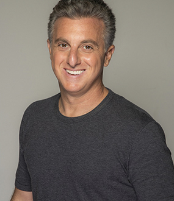

| Luciano Huck | |
| 53 | |
| Rio de Janeiro | |
| Huck estudou na Faculdade de Direito da Universidade de São Paulo (USP), porém não chegou a se graduar. Ainda adolescente, começou a trabalhar como assistente do fotógrafo J.R. Duran. Aos 20 anos de idade, Luciano Huck fez um estágio na agência W/Brasil, do publicitário Washington Olivetto. |
Luciano Huck é filho do jurista Hermes Marcelo Huck e da urbanista Marta Dora Grostein, e irmão do diretor de cinema Fernando Grostein, filho do relacionamento de Marta Grostein com Márcio Escobar de Andrade, ex-diretor de redação da Playboy. Luciano é judeu, sendo seu avô materno, Mauricio Grostein, proveniente da cidade de Ekaterinoslav, União Soviética - atualmente Dnipro, na Ucrânia, terra de origem também de outros dois de seus quatro avós. É enteado de Andrea Calabi, economista ligado ao PSDB paulista. Desde 2004, Huck é casado com a também apresentadora Angélica, com quem tem 3 filhos: Joaquim, Benício e Eva.
Huck estudou na Faculdade de Direito da Universidade de São Paulo (USP), porém não chegou a se graduar. Ainda adolescente, começou a trabalhar como assistente do fotógrafo J.R. Duran. Aos 20 anos de idade, Luciano Huck fez um estágio na agência W/Brasil, do publicitário Washington Olivetto. Na mesma época, em sociedade com amigos e com um empréstimo do pai, abriu o bar Cabral, em São Paulo, voltado para a jovem elite paulistana. Estagiou também nas agências de publicidade DM9, de Nizan Guanaes, e Talent. Também trabalhou na 89 FM A Rádio Rock e na Revista Playboy, na seção 20 perguntas.
Aos 22 anos, Luciano Huck foi convidado por Fernão Lara Mesquita, diretor do Jornal da Tarde, para publicar a coluna social “Circulando”. Na mesma época, começou a fazer locução em programa da rádio Jovem Pan. Aos 23 anos, estreou na televisão, mais especificamente no comando de um quadro no programa Perfil, com Otávio Mesquita. Aos 24 anos, sua coluna no JT virou programa de televisão, o Circulando, na CNT Gazeta. Na mesma ocasião, Huck inaugurou o bar Sirena em Maresia, litoral norte paulista.
Em setembro de 1996, a convite da Rede Bandeirantes, Luciano Huck estreou o programa H, diário e voltado para o público jovem, acumulando a função de locutor do programa Torpedo na rádio Jovem Pan. No H, Huck lançou as personagens Tiazinha e Feiticeira, aumentando o sucesso do programa. Aos 27 anos, deixou a coluna no JT para dedicar-se integralmente ao programa H. Em 1998, ocupando o horário nobre das 21h, chegou a alcançar oito pontos de audiência.

Em setembro de 1999, Luciano assina contrato com a TV Globo, para apresentar o programa Caldeirão do Huck, exibido aos sábados às 16 horas, para todo território brasileiro e para 115 países pela Globo Internacional. O programa é líder de audiência consolidando o horário que no passado foi ocupado por Chacrinha. Huck recebeu o Prêmio Extra de Televisão de melhor apresentador de TV por seis anos consecutivos, organizado pelo jornal do Rio de Janeiro, Extra, similar ao the "People's Choice Awards" (2011, 2010, 2009, 2008, 2007 e 2006). Por sua vez, Caldeirão do Huck recebeu o mesmo prêmio, como melhor show de variedades, por nove anos (2011, 2010, 2009, 2008, 2007, 2006, 2005, 2004 e 2003), incluindo um prêmio pelo Soletrando em 2007.
Em 2017, após fazer uma matéria especial sobre a atuação do Exército Brasileiro na Missão das Nações Unidas para a estabilização no Haiti para o programa Caldeirão do Huck, foi agraciado pelo mesmo com a Ordem do Mérito Militar, a mais elevada distinção honorífica militar brasileira, sob o grau de oficial.
Em 15 de junho de 2021 Luciano Huck afirmou que assumiria a apresentação do Domingão do Faustão, com a saída de Fausto Silva para a Band no fim de 2021.